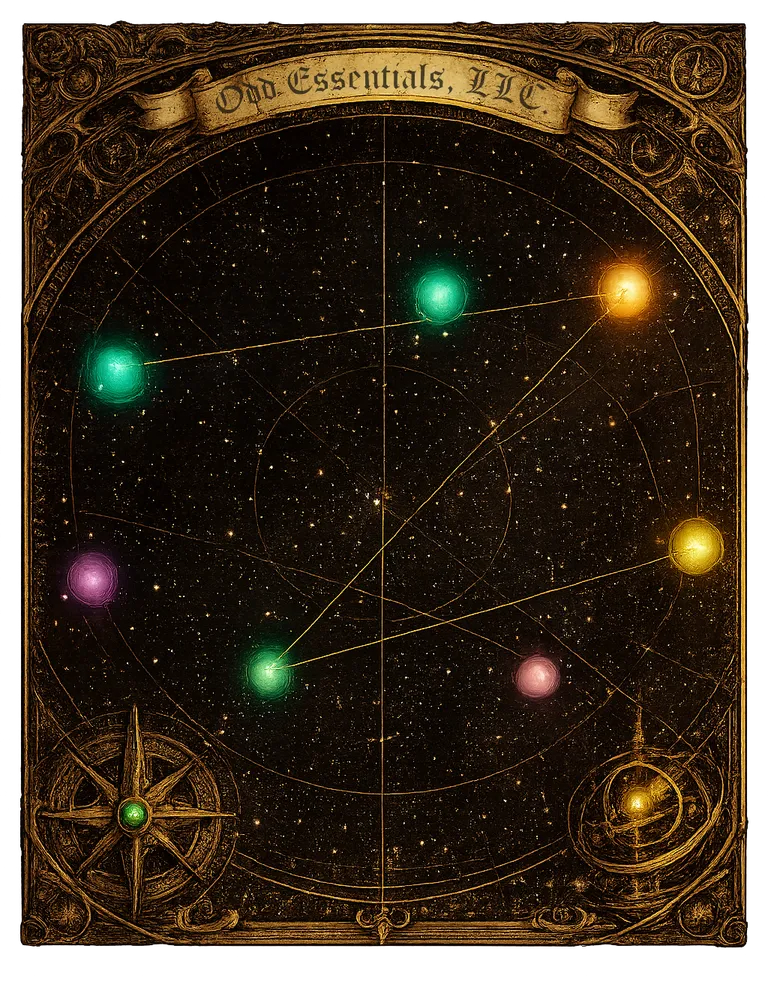

An interactive starfield with 9 glowing star nodes and 2 cluster groups, each representing portfolio projects. Use the project navigation to select a project, or click a star directly.

An interactive starfield with 9 glowing star nodes and 2 cluster groups, each representing portfolio projects. Use the project navigation to select a project, or click a star directly.
Activate a project to open its detail panel. Press Escape to close.